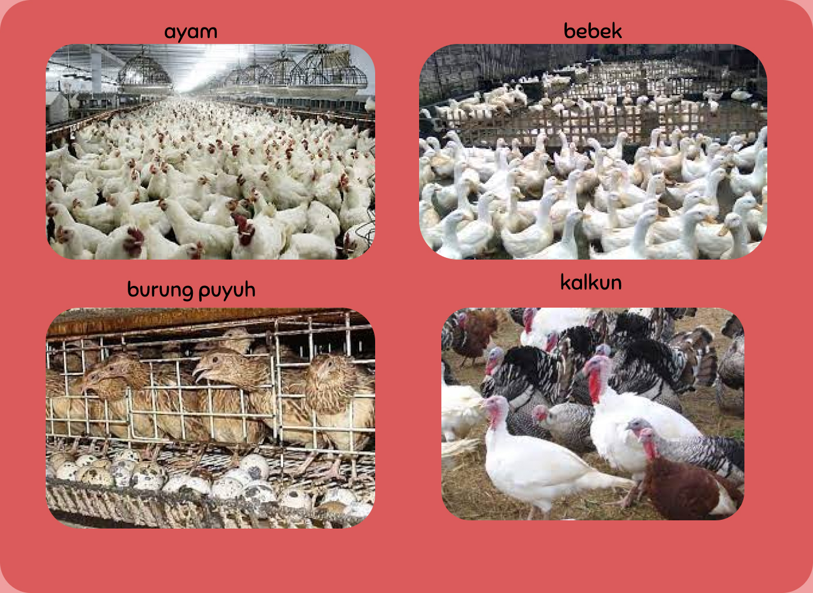
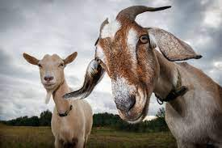
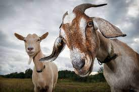
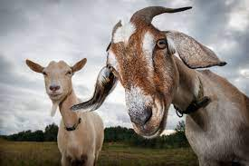

APAKAH PERLU PEMBERIAN PAKAN BERKUALITAS ?
Pakan unggas yang berkualitas memberikan peranan yang sangat penting, khususnya pada unggas pedaging yang dapat menghasilkan daging dalam waktu relatif singkat. Tingginya permintaan masyarakat terhadap produk daging ayam, memotivasi peternak untuk dapat meningkatkan produktivitas ternaknya agar dapat memenuhi permintaan konsumen. Salah satunya dengan pembverian pakan berkualitas. Maka dari itu kami merekomendasikan Voer N5 yang terbuat dari bahan bahan organik tanpa bahan pengaewt dan obat obatan yang membahayakan hewan.

APA ITU VOER N5H1?
Voer N5H1 merupakan pakan ternak khususnya untuk unggas pedaging yang memerlukan nutrisi untuk pertumbuhan dan daging yang maksimal dalam waktu yang cepat, Pakan ini terbuat dari bahan 5 bahan nabati dan 1 Hewani yaitu singkong kering yang digiling, tepung kedelai, bekatul atau kulit padi giling, nasi kering, limbah gandum, dan tepung ikan. Kami memanfaatkan limbah organik yang masih bisa digunakan dan memiliki kualitas masih bagus untuk mengurangi dan mendaur ulang limbah organik agar tidak terbuang percuma.
DIMANA PRODUK INI DIJUAL?
Pemasarannya sangat mudah ditemukan dikarenakan banyak peternak yang ingin hewan ternaknya berkualitas dengan pakan yang berkualitas tapi harganya sangat bersahabat sehingga kami tidak berpikir panjang untuk langsung mengirim ke toko toko seluruh Indonesia. Apalagi kami bekerjasama dengan pabrik pabrik yang sangat menjaga kualitas membuat produk ini ditunggu banyak peternak walaupun kami menggunakan bahan limbah, sehingga harganya akan jauh lebih ramah dibanding merk apapun dan membuat kita tidak takut untuk tersaingi
UJI COBA PRODUK PADA UNGGAS

UJI COBA PRODUK PADA BEBERAPA MAMALIA
 

